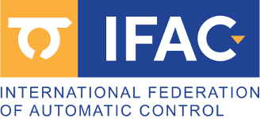
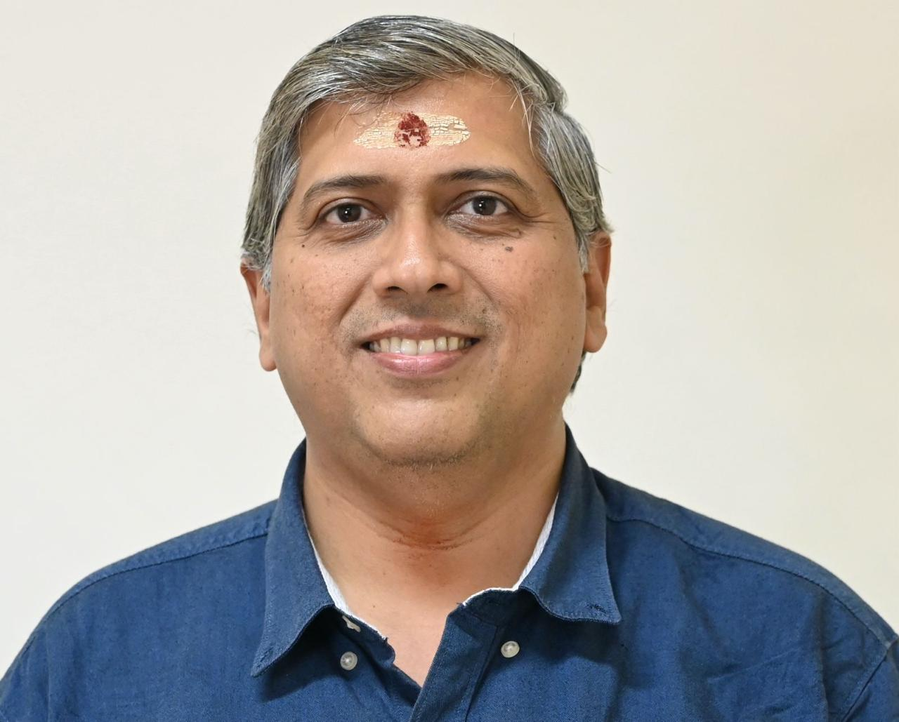

Sloppiness, Information Gain, and Practical Strategies
Register NowThis full-day workshop focuses on parametric nonlinear system identification, highlighting sloppiness, identifiability, and information-theoretic experiment design. Participants will explore geometric perspectives and β-information gain to improve model understanding and control.
| Time | Session |
|---|---|
| 09:30–10:15 | Foundations of nonlinear identification |
| 10:15–11:00 | Geometry and diagnostics |
| 11:15–12:00 | Bayesian formalism |
| 12:00–12:45 | Information gain |
| 13:45–14:45 | Hands-on case study |
| 14:45–15:30 | Model optimization |
| 15:45–16:30 | Robust control implications |
| 16:30–17:00 | Discussion & Q&A |
Researchers, practitioners, and graduate students in system identification, control, machine learning, and dynamical systems.
IIT Madras
IIT Madras
